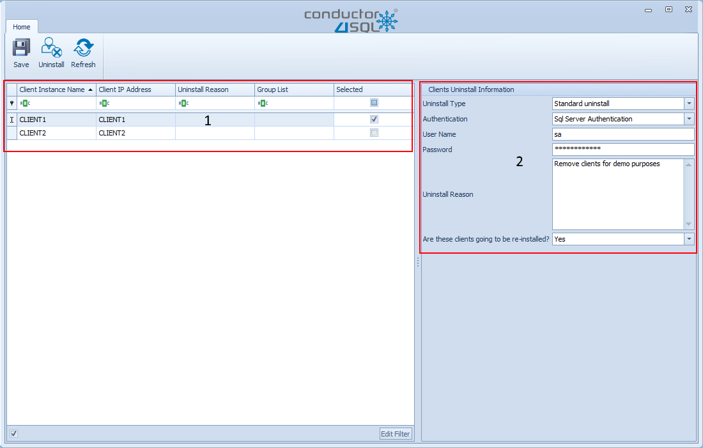

Client Uninstallation Overview
At times you will need to uninstall clients.
Some reasons to uninstall clients are:
- The client instance is no longer needed. e.g. you using Conductor4SQL to sync Pos data some stores close and hence need to be uninstalled to clean up the Conductor4SQL dashboard.
- A natural disaster has occurred and the client server is destroyed
Client Uninstallation (one-at-a-time)
You can remove a client by selecting Clients >> Remove Client
Note
This option is only visible if one or more clients are installed
Fill in the Client Uninstaller dialog:
There are 3 options for Uninstall Type:
- 1. Standard uninstall - It is always advisable to go with this option, which then requires that the client is accessible both on central and at the client. This option will ensure that the Conductor4SQL application is uninstalled both on client side and central
- 2. Uninstall Client at client side only - This option allows you clean up the installation from the client side only, this is useful if the client was removed using the Uninstall client at central side only in the past and the server is now online again and you wish to re-install.
- 3. Uninstall client at central side only - This option one will only remove the client on the central side if the client is no longer accessible on the client side. This option is useful if Standard uninstall is not possible as when a disaster happens, such as the physical server having hardware damage or stolen.
- 4. Uninstall Reason - You will need to put in a reason for removing the client. For instance if the store is closed, you can put reason as "Store closed"
-
5. Is this client going to be re-installed:
- Yes: if you say yes then all the data synced data will be removed from central for that specific client, however, all client settings will also be stored so that on re-install you can have the previous settings you need be.
- No if you select no, then the data will be kept on central, for future references.
Note
An example of the settings that are stored would be the business attributes, the data sync mappings and the list of tables that the client was syncing. To simplify the client's re-install in the future.
When all fields are filled, you can then click on Test Connection button and
Note
This Test Connection button is not visible when the Uninstall client at central side only option is selected.
If the connectivity test passes then you will be able to click on the Uninstall button.
Client Uninstallation (using bulk uninstaller)
You can remove clients in bulk by selecting Clients >> Bulk Remove Client

On the bulk client uninstall screen, you are presented with a grid, which then has a list of all clients installed. You are then able to select those clients you want to remove or uninstall, by checking the check-box on the selected column.
You will then be required to fill in remainder of the form on the right.
To initiate the uninstall click on the Uninstaller button.
Note
You can just save the list of clients you wish to uninstall by using the Save button and uninstall them at a later date
Bulk Client Uninstallation Progress
After selecting the Uninstaller button you are taken to the screen below.

If you click on the Start button the uninstall will initiate the uninstalls
If you change your mind you can always click on the Back button and return to the previous screen.
Tip
You can adjust the number of clients that can be uninstalled at once by adjusting the Number of Bulk Uninstaller Threads in the Administration - UI and System Configuration screen
Once the uninstallation of clients has started. you judge the progress as follows:
- A green circle indicates a favorable result and the client is uninstalled.
- A red circle indicates that the uninstall failed and the Issue column will be filled in to attempt to diagnose the issue.
- A gray circle indicates that uninstallation has not yet started.
- A orange arrow indicates that this client is currently being uninstalled.